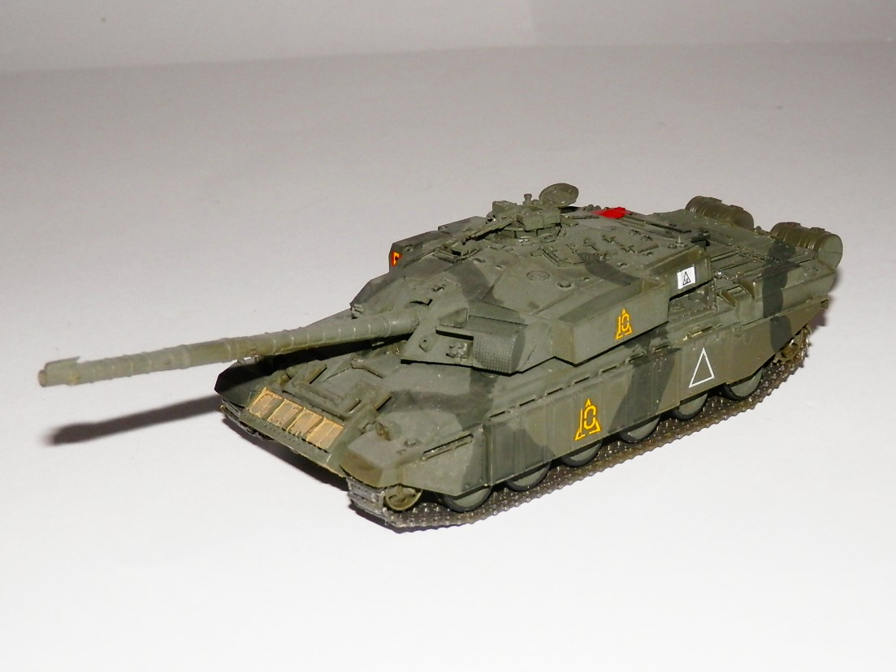
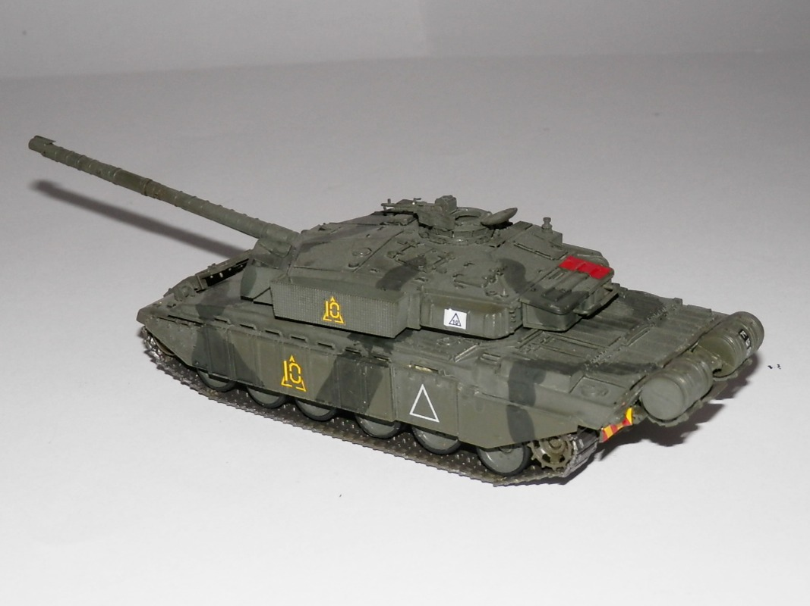

Mezzi militari · scale model archive
British Main Battle Tank Challenger
British Main Battle Tank Challenger — Kit: Revell, Scale: 1/72. KFOR King's Royal Hussars Kosovo June 1999 In this case as well, a cute little kit.

Photo gallery

English description
KFOR King's Royal Hussars Kosovo June 1999 In this case as well, a cute little kit.
Descrizione italiana
KFOR King's Royal Hussars, Kosovo, giugno 1999. Anche in questo caso, un piccolo kit molto grazioso.